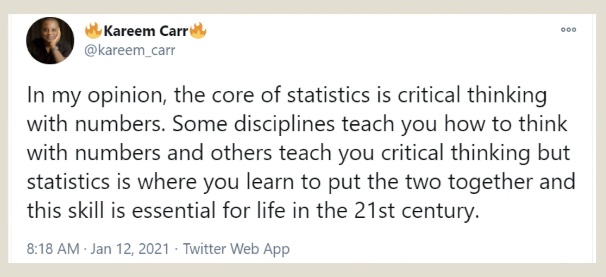
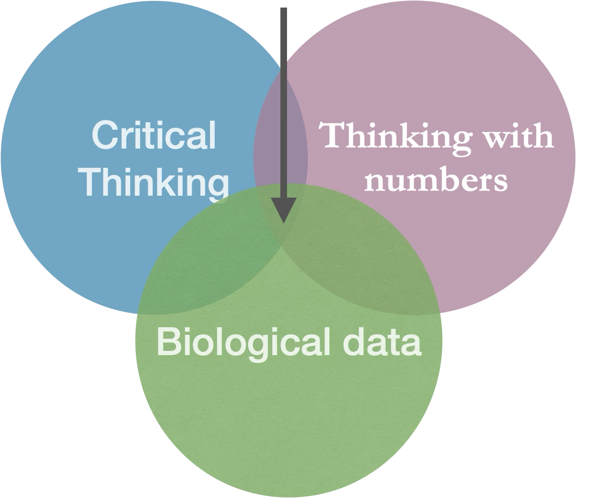
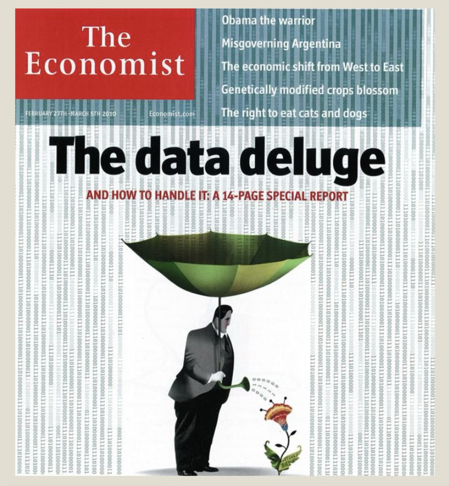
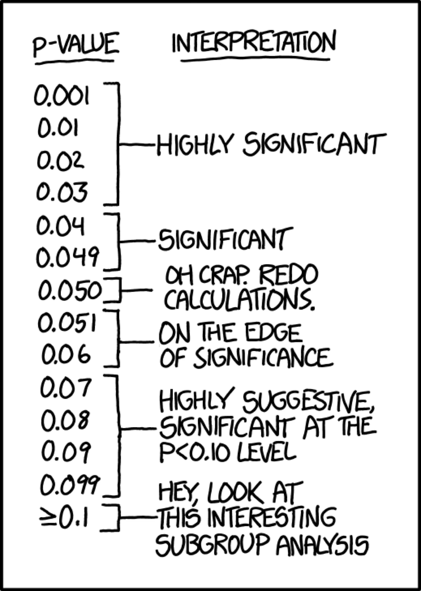
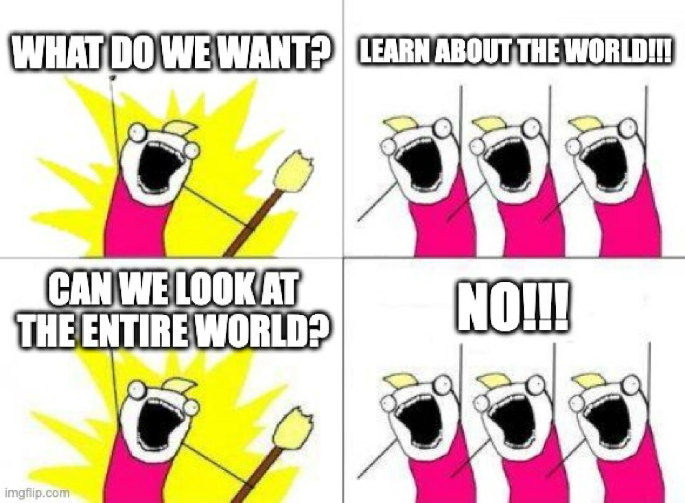
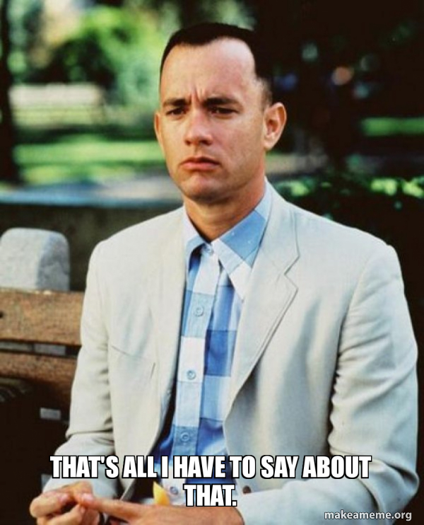

1.1. Statistics & Samples
2025-09-03
Overview
- Goals of statistics
- Populations and Samples
- Statistics and parameters
- Estimate errors due to sampling
- Types of experiments
- Types of variables
Learning Goals
- Understand the major goal of statistics.
- Distinguish between a sample and a population.
- Distinguish between an estimate and a parameter.
- Identify why estimates from samples may deviate from parameters of populations.
- Identify the properties of a good sample.
- Describe the differences between observational and experimental studies
What is statistics?
Tweet from someone I don’t know, but very on point, so thank you!
What is BIOstatistics?

Why should you care about statistics?
- Biology (ecology, genetics, immunology, microbiology, …)
- Biomedical sciences
- Public health
- Data science
- Economy, Psychology, Social Science
Why should anyone care about statistics?
- Good science!
- Critical evaluation of “scientific evidence”
- Statistics and probability are not intuitive
- We tend to jump to conclusions and we are very often wrong
- Transferable skills
Challenge: data deluge
Cover from “The Economist” (Feb 27-March 10, 2010)
Challenge: understanding
=0.1 on the left, and on the right offers and interpretation." width="791" class="r-stretch quarto-figure-center">From: https://xkcd.com/1478/
Goal: learn about the world
From: imgflip.com/memegenerator
Let’s try again
- Statistics are a quantitative technology for empirical science.
- A logic and methodology for the measurement of uncertainty and for an examination of that uncertainty.
- The key word here is uncertainty. Statistics becomes necessary when observations are variable.
What about biostats?
- What is the motivating biological question?
- What experiments can be done and/or data can be collected to address this question?
- Do results support an interesting conclusion?
- What are the shortcomings/limitations of statistical models and causal frameworks in the analysis?
- How do I best communicate my results (including estimates, visualizations, conclusions, and caveats)?
The Central Obsession
- Question: How do we make inferences about the WORLD from our finite observations?
- Answer: Make models to account for the process of sampling and the associated hazards.
Important distinctions
- Populations vs. samples
- Parameters vs. estimates
Populations
In Biology: > A collection of interbreeding individuals of the same species that live in sufficient proximity that most mates are draw from this collection of individuals. This mostly applies to animals and, to some extent, plants.
In Statistics: the entire collection of individual units that a researcher is interested in. E.g. all women born in the US between 1990 and 200; all polar bears currently living in zoos; users of a certain social network in a certain age group; etc
Statistics & parameters
A parameter is some property of the world, i.e., the “truth”
A population of starfish
- Parameters describe populations
- E.g. proportion of pink starfish among all starfish of a given species in a certain location
A sample of starfish
- Estimates (statistics) approximate parameters as inferred from samples
- We estimate the proportion of pink as inferred from this sample and extrapolate to the population as an approximation.
In summary
Parameters and populations
- Parameters describe Populations
- Because we can’t sample an entire population, we usually don’t know parameters.
Estimates and samples
- But we can get a good sense of the parameters from estimates we make from samples.
- stimates approximate parameters as inferred from Samples
That’s all for today
From: makeameme.org